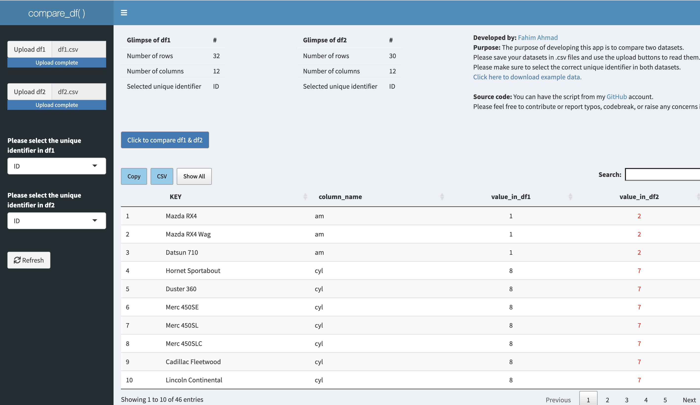

Creating dashboards and visualizations is the most rewarding aspect of my work as a data analyst.

Explore and compare key social, economic, environmental, and institutional indicators across various countries.

I developed this dashboard as as part of my studies at Massachusetts Institute of Technology (MIT) - Emerging Talent Program where our team undertook a study focused on analyzing the profound impact of attacks on healthcare facilities.

Compare two versions of the same dataset to identify differences.